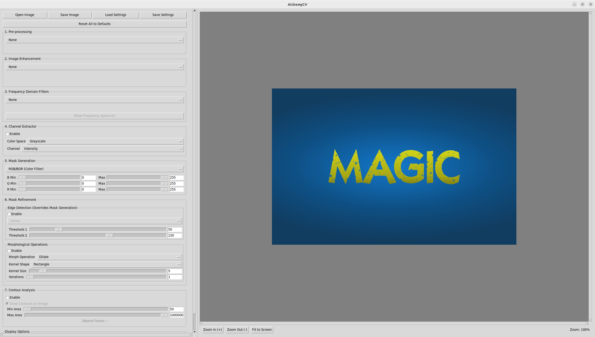
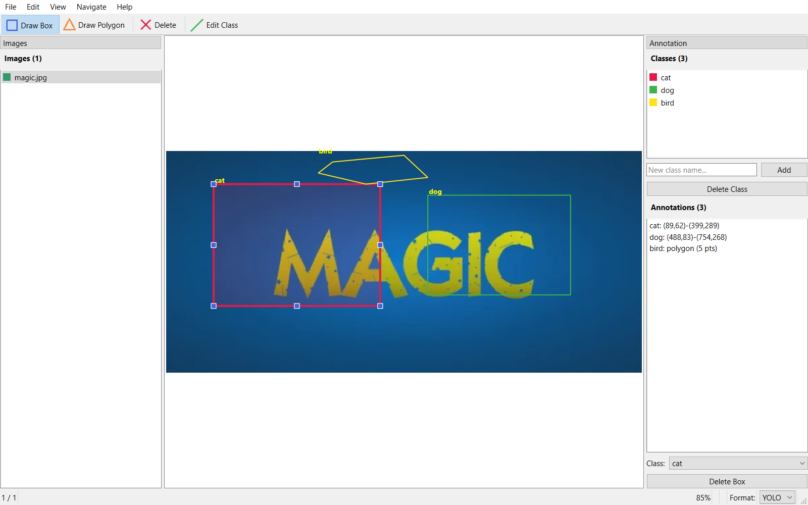
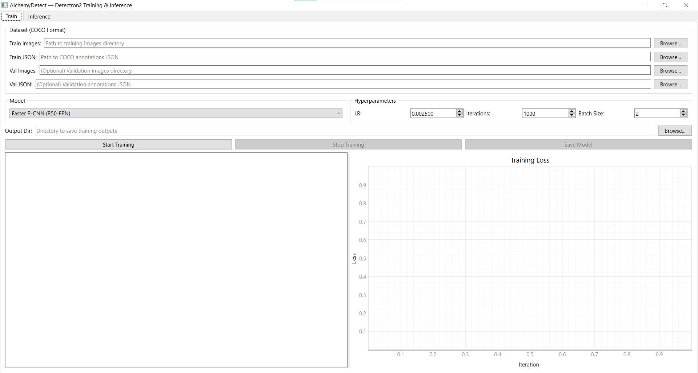
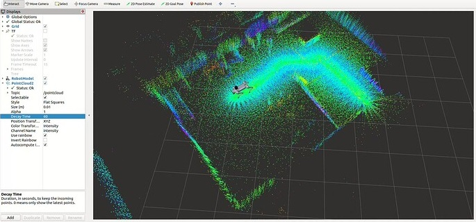
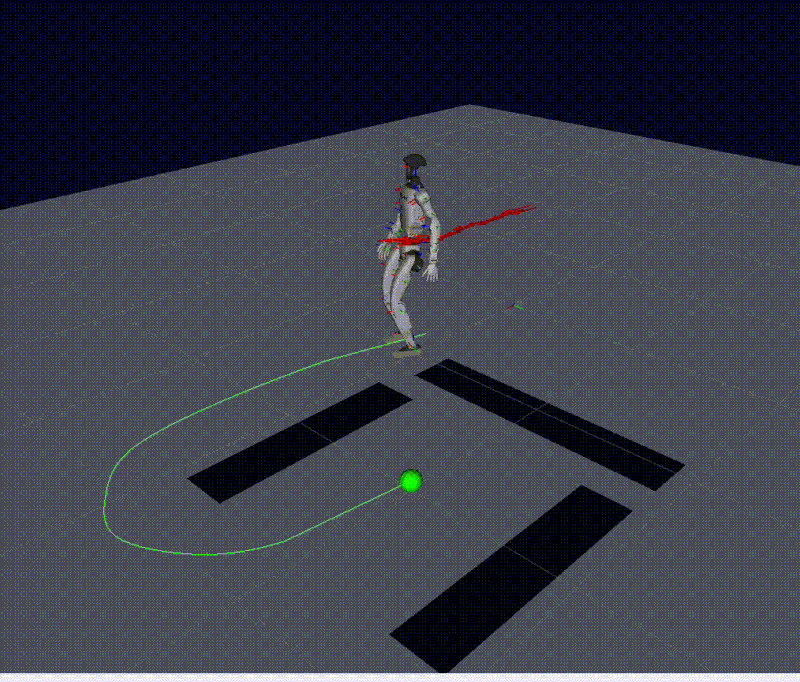
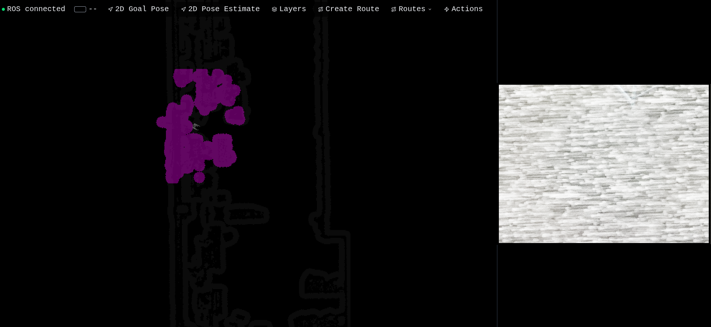
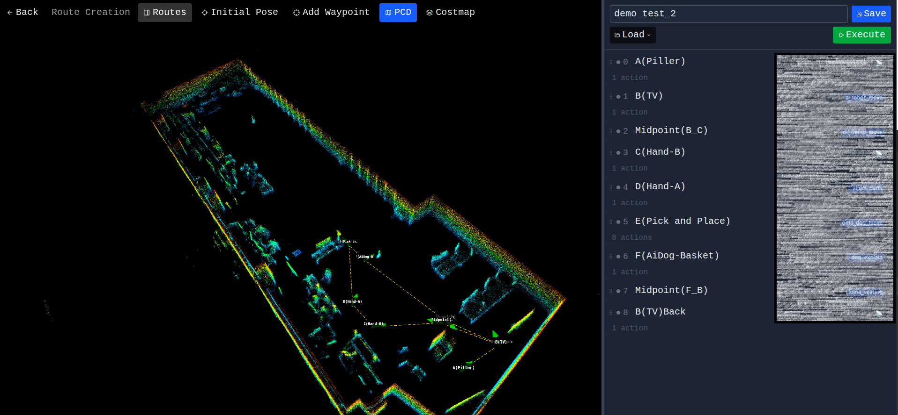

AlchemyCV: A Desktop App for Multi-Stage Image Processing
Why I built a 5-stage image processing pipeline as an open-source desktop tool — blur, enhance, filter, mask, and detect edges with real-time parameter tuning.
Thoughts on AI, robotics, computer vision, and lessons from the field.

Why I built a 5-stage image processing pipeline as an open-source desktop tool — blur, enhance, filter, mask, and detect edges with real-time parameter tuning.

I built a desktop annotation tool that exports to YOLO, Pascal VOC, and COCO — because existing tools were either too heavy or too limited.

A desktop GUI for training Faster R-CNN, RetinaNet, and Mask R-CNN models — with real-time loss plots and one-click inference on images or folders.

Turning a Unitree Go2 into an autonomous patrol robot — random-walk navigation in a mapped area, person detection, face-DB verification, and intrusion alerts.

A walkthrough of integrating VLM, LiDAR, and RealSense D435i on the Unitree G1 to give a humanoid robot the ability to navigate, see, and speak.

How I built a React + Three.js operator console for a Unitree G1 humanoid — live costmap, point cloud overlay, camera feed, and click-to-go navigation, all from scratch.

Programmable waypoint routes, an action library on the robot, recovery flows for failed goals, and a Detectron2 object detection pipeline wired straight into the operator UI.
The robot-side deep dive — FAST-LIO + Open3D ICP localization, move_base tuning, the cmd_vel bridge, and the asyncio executor that runs everything on the Jetson.
Breaking down the difference between Vision-Language Models and Vision-Language-Action models, when to use each, and real-world trade-offs I've encountered.
A practical comparison of anomaly detection approaches for manufacturing QA — what worked, what didn't, and how we got to 90%+ accuracy across 8 modules.
A concise walkthrough of the evolution from convolutional networks to transformers — what changed, why it matters, and how it connects to current work in vision and NLP.
A condensed guide to ROS2 for ML/AI engineers who need to ship robot software — nodes, topics, actions, and the parts that matter for real integration.